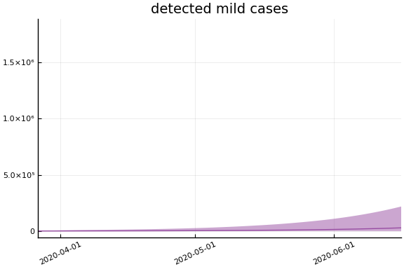
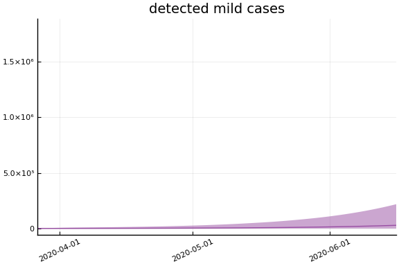
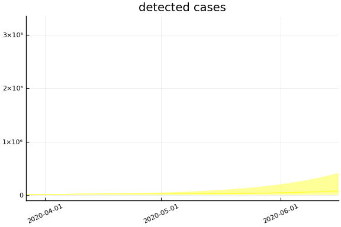
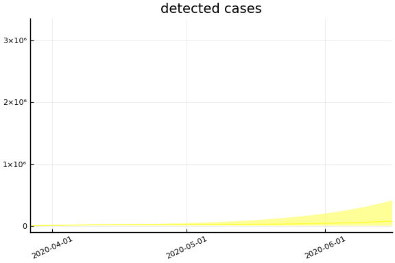
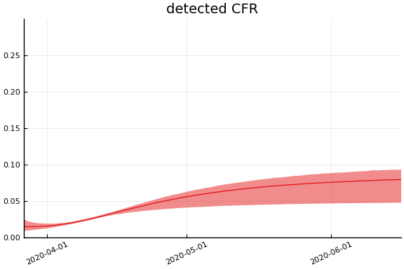
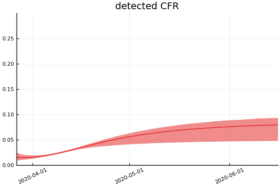

This work is licensed under a Creative Commons Attribution-ShareAlike 4.0 International License
using CovidSEIR, Plots, DataFrames, JLD2, StatsPlots
Plots.pyplot()
jmddir = normpath(joinpath(dirname(Base.find_package("CovidSEIR")),"..","docs","jmd"))
covdf = covidjhudata();
Canada¶
We estimate the model with the following code. It takes about an hour.
canada = CountryData(covdf, "Canada");
using Turing
canmod = CovidSEIR.TimeVarying.countrymodel(canada)
cc = Turing.psample(canmod, NUTS(0.65), 5000, 4)
import JLD2
JLD2.@save "$jmddir/canada_$(Dates.today()).jld2" cc
JLD2.@load "$jmddir/canada_tv_2020-04-09.jld2" cc dayt0;
Estimates¶
plot(cc)
We can see that there might be convergence issues. There are large differences between the four chains for some parameters.
describe(cc)
2-element Array{MCMCChains.ChainDataFrame,1}
Summary Statistics
parameters mean std naive_se mcse ess r_hat
────────── ──────── ─────── ──────── ────── ──────── ──────
a 0.1068 0.0364 0.0003 0.0024 82.9611 1.2247
pE0 0.0000 0.0000 0.0000 0.0000 78.7772 1.2688
p[1] 0.1063 0.0793 0.0006 0.0062 64.2570 1.9193
p[2] 0.0120 0.0049 0.0000 0.0003 64.2570 1.7782
sigC 167.7878 17.9235 0.1417 1.1282 78.0550 1.2149
sigD 6.6276 0.7309 0.0058 0.0495 65.5119 1.2620
sigRc 109.1130 9.4047 0.0744 0.5457 115.6945 1.0617
β[1] 1.1927 0.3558 0.0028 0.0248 64.2570 1.5124
β[2] 0.1390 0.1736 0.0014 0.0113 85.8438 1.1933
β[3] 1.3832 0.8148 0.0064 0.0525 68.1853 1.4122
γ[1] 0.0132 0.0076 0.0001 0.0006 64.2570 1.4369
γ[2] 0.0782 0.0210 0.0002 0.0014 64.2570 1.3916
ρ[1] 0.8102 0.0602 0.0005 0.0043 64.5680 1.3410
ρ[2] 64.0847 0.6431 0.0051 0.0436 65.9519 1.3600
τ 3.9359 1.2169 0.0096 0.0842 66.0398 1.3239
Quantiles
parameters 2.5% 25.0% 50.0% 75.0% 97.5%
────────── ──────── ──────── ──────── ──────── ────────
a 0.0721 0.0822 0.0982 0.1263 0.1903
pE0 0.0000 0.0000 0.0000 0.0000 0.0000
p[1] 0.0477 0.0481 0.0877 0.1218 0.3898
p[2] 0.0041 0.0083 0.0113 0.0174 0.0185
sigC 146.1830 151.1294 164.0833 179.4342 208.9989
sigD 5.6398 6.1580 6.4290 6.9583 8.5249
sigRc 90.7293 102.4296 111.3804 113.7784 128.6707
β[1] 0.7587 0.7587 1.2164 1.4247 1.9091
β[2] 0.0061 0.0335 0.0606 0.1813 0.5860
β[3] 0.0912 0.6689 1.2960 2.3308 2.5461
γ[1] 0.0011 0.0068 0.0121 0.0221 0.0252
γ[2] 0.0365 0.0675 0.0751 0.0875 0.1263
ρ[1] 0.6958 0.7692 0.8052 0.8433 0.9455
ρ[2] 62.8200 63.6155 64.1065 64.7421 64.9846
τ 1.4887 3.0611 4.0694 5.0147 5.7447
The parameter estimates are generally not very precise.
Fit¶
sdf = simtrajectories(cc, canada, 1:200)
f = plotvars(sdf, canada)
f.fit

In this figure, solid lines are observed data, dashed lines are posterior means, and the shaded region is a pointwise 90% credible interval.
Implications¶
We now look at the model’s projections for some observed and unobserved variables.
for fig in f.trajectories
display(fig)
end


 

 


 



In general we see a similar pattern as noted above: the posteriors for observed variables are fairly precise. However, the posteriors for unobserved variables, such as the portion of undetected infections and the portion of mild infections, are very imprecise.